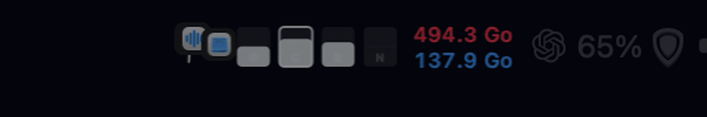
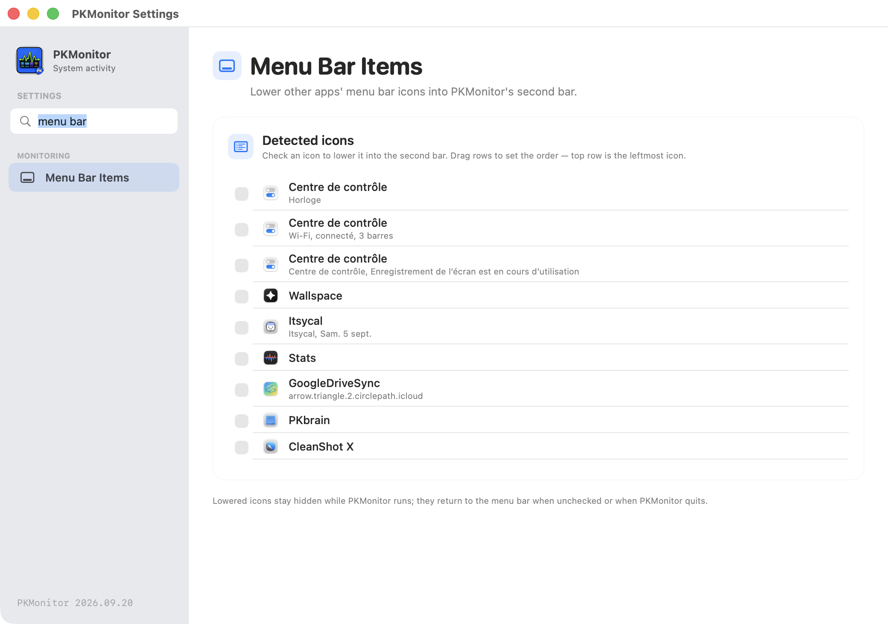

Le moniteur Mac qui reste sur une ligne.
CPU, GPU, RAM, réseau et disque dans votre barre des menus. La sparkline identifie les apps qui provoquent chaque pic — au survol, tout s’explique.

Sparkline
Une courbe d’activité où chaque pic porte l’icône de l’app dominante.
Panneau au survol
Processus gourmands, mémoire, CPU — et arrêt d’une app en un clic.
Seconde barre
Les icônes secondaires descendent, façon Bartender, clic transféré.
Conseiller IA
Analyse à la demande via votre endpoint OpenAI-compatible. Clé au Trousseau.
Tout ce qu’il faut pour lire votre Mac.
changelog ↗Un Mac lisible
CPU, GPU, RAM, disque en deux lignes et réseau download/upload : des jauges activables, réordonnables et colorables à votre goût.

Les apps qui comptent
Au survol d’un pic, le panneau détaille les processus dominants et propose de quitter une app qui s’emballe.

Une barre plus nette
Settings › Menu Bar Items : cochez les icônes à descendre, réordonnez-les, PKMonitor les restaure au décochage.

Questions fréquentes
Quelles versions de macOS sont prises en charge ?
macOS 13 Ventura ou ultérieur, sur Mac Intel et Apple Silicon.
Les données quittent-elles mon Mac ?
Non, par défaut rien ne sort. Une analyse IA envoie uniquement à l’endpoint que vous configurez les métriques des apps concernées, après un clic explicite. La clé API reste dans le Trousseau.
Peut-on descendre des icônes tierces dans la seconde barre ?
Oui — cochez les icônes dans Settings › Menu Bar Items, réordonnez-les, et PKMonitor les restaure au décochage ou à la fermeture. Permissions : Accessibilité et Enregistrement d’écran.
Combien ça coûte ?
Rien. PKMonitor est open source et gratuit — un soutien sur Ko-fi fait toujours plaisir.
Prêt à voir ce que fait votre Mac ?
Installez-le en quelques secondes. macOS 13+, aucun compte requis.